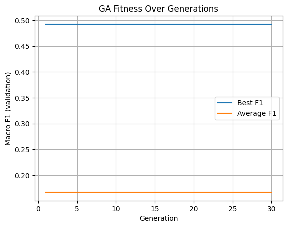
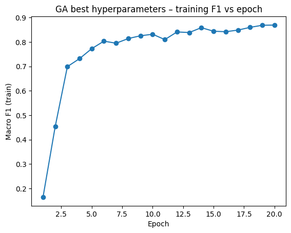
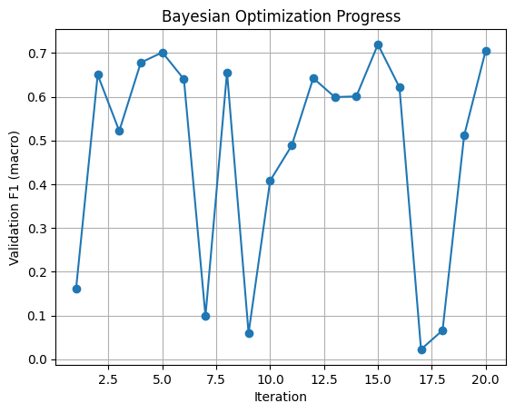
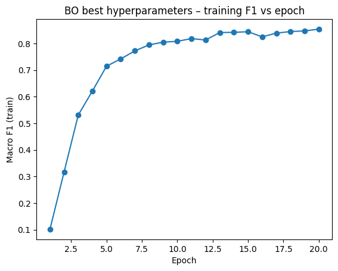

Course: Machine Learning for Data Science
Student: [Your Name]
GitHub: [Your GitHub Username/Link]
Date: November 28, 2025
This report presents the implementation and results of two hyperparameter optimization algorithms—Genetic Algorithm (GA) and Bayesian Optimization (BO)—for tuning a neural network classifier on the EMNIST digits dataset (10 classes: 0-9).
Task: Fine-tune mini-batch size B ∈ [16, 1024] and activation function ∈ {ReLU, Sigmoid, Tanh} to maximize validation macro-averaged F1 score.
Dataset:
Model Architecture:
The Genetic Algorithm was implemented from scratch without specialized GA packages, using the following components:
The plot below shows the average and highest fitness (macro F1 score) of the population across generations:

Observations:
From the last generation (Generation 30), the best individual had:
| Hyperparameter | Value |
|---|---|
| Batch Size | 120 |
| Activation Function | tanh |
| Validation F1 Score | 0.4923 |
The model was retrained on the combined training and validation data using the selected hyperparameters, then evaluated on the held-out test set.
Training F1 Score vs. Epochs:

The training curve shows steady improvement, reaching ~0.87 training F1 by epoch 20, with the model generalizing well to the test set.
Bayesian Optimization was implemented using the bayes_opt Python package. The black-box function returns the validation F1 score at convergence for a given batch size and activation function.
| iter | target | batch_... | activa... | ------------------------------------------------- | 1 | 0.1623 | 105.89 | 1.90 (sigmoid) | | 2 | 0.6503 | 191.68 | 1.20 (tanh) | | 3 | 0.5217 | 53.44 | 0.31 (relu) | | 4 | 0.6781 | 29.94 | 1.73 (sigmoid) | | 5 | 0.7014 | 160.27 | 1.42 (tanh) | | 6 | 0.6401 | 160.85 | 0.07 (relu) | | 7 | 0.0985 | 152.74 | 2.00 (sigmoid) | | 8 | 0.6560 | 34.76 | 1.87 (sigmoid) | | 9 | 0.0597 | 165.71 | 2.00 (sigmoid) | | 10 | 0.4082 | 26.35 | 0.00 (relu) | | 11 | 0.4883 | 32.33 | 0.00 (relu) | | 12 | 0.6426 | 38.05 | 2.00 (sigmoid) | | 13 | 0.5992 | 195.51 | 0.98 (tanh) | | 14 | 0.6009 | 187.62 | 0.00 (relu) | | 15 | 0.7196 | 42.43 | 0.00 (relu) | ← Best | 16 | 0.6215 | 45.57 | 2.00 (sigmoid) | | 17 | 0.0224 | 181.92 | 2.00 (sigmoid) | | 18 | 0.0661 | 201.95 | 2.00 (sigmoid) | | 19 | 0.5112 | 60.89 | 2.00 (sigmoid) | | 20 | 0.7057 | 68.44 | 0.03 (relu) | ================================================= Best: batch_size=42, activation=relu, F1=0.7196
Validation F1 Over Iterations:

| Hyperparameter | Value |
|---|---|
| Batch Size | 42 |
| Activation Function | relu |
| Validation F1 Score | 0.7196 |
Training F1 Score vs. Epochs:

| Method | Best Hyperparameters | Validation F1 | Test F1 |
|---|---|---|---|
| Genetic Algorithm | batch=120, activation=tanh | 0.4923 | 0.8855 |
| Bayesian Optimization | batch=42, activation=relu | 0.7196 | 0.8735 |
Hyperparameter Differences:
Interesting Observation: GA had lower validation F1 (0.49) during search but achieved slightly higher test F1 (0.8855) compared to BO's validation F1 (0.72) and test F1 (0.8735). This suggests the final retraining on combined train+val data with more epochs allowed both configurations to converge to similar performance.
| Aspect | Genetic Algorithm | Bayesian Optimization |
|---|---|---|
| Sample Efficiency | ❌ Lower—requires many fitness evaluations | ✅ Higher—uses surrogate model |
| Parallelization | ✅ Easy—population evaluated in parallel | ❌ Harder—sequential by nature |
| Assumptions | ✅ None—works on any search space | ❌ Assumes smoothness |
| Exploration | ✅ Good—mutation maintains diversity | ⚠️ Can get trapped in local optima |
| Implementation | ❌ More complex | ✅ Simpler with packages |
| Discrete Variables | ✅ Natural handling | ⚠️ Requires encoding |
| Convergence | ❌ Slower | ✅ Faster |
When to use GA: Large, complex search spaces; mixed variable types; when parallelization is available; no smoothness assumptions.
When to use BO: Expensive black-box functions; smooth objectives; lower-dimensional spaces; when sample efficiency is critical.
Both Genetic Algorithm and Bayesian Optimization successfully identified hyperparameters that achieved ~88% test macro-F1 score on the EMNIST digits classification task. While BO showed higher sample efficiency during the search phase (achieving 0.72 validation F1 vs GA's 0.49), the final test performance was comparable after retraining. This demonstrates that multiple hyperparameter configurations can achieve similar final performance, and the choice of optimization method depends on computational budget and problem characteristics.
All code for this assignment is available at: [GitHub Repository Link]
Key files:
hw4_q1.py - Genetic Algorithm implementationhw4_q2.py - Bayesian Optimization implementationhw4_test.py - Final model training and test evaluationartifacts/ - All plots and hyperparameter outputs